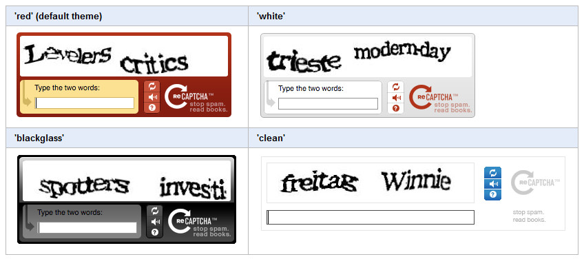
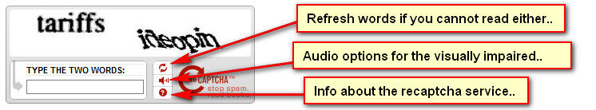

Documentation -


Documentation -

COMMERCIAL VERSION INCLUDES: - FREE upgrades for life - One time payment, NO subscriptions - ALL features unlocked and unlimited
Overview
For spam prevention on the ticket creation page, Maian Support utilises the reCaptcha service from Google, a free anti-bot prevention solution. For more information, click here. If you aren`t sure about spam or its terminology, click here. reCaptcha offers a lot of flexibility with its code, so see below for more information.
Enable in Maian Support
Click 'General Settings' in your admin area. Click "Create Keys" to create a free account. After you have signed up for your free account, enter your private key and public key in the relevant boxes.
To disable spam prevention measures in this software, leave both boxes blank.
API Settings & Appearance
There are some api settings available (ie, colour options, language etc), which are detailed on the reCaptcha website. To change them in this software, edit the following file:
templates/html/recaptcha.htm
Available Pre-Made Themes
At the time of these docs, the available pre-made themes are:

Available themes are shown here.
Custom Themes
You can alsoo create your own custom theme. More info here.
Example of Language Change
Lets say you want to use French. Open the following file in your text editor:
templates/html/recaptcha.htm
Change the following:
var RecaptchaOptions = {
theme : 'white',
tabindex: '999',
lang: 'en'
};
to
var RecaptchaOptions = {
theme : 'white',
tabindex: '999',
lang: 'fr'
};
Supported languages are shown here.
Appearance on Ticket Creation Page
If correctly configured, the following will appear on the ticket creation page:

SSL
SSL should be auto detected by Maian Support and reCaptcha should work fine on a secure server.
Google API Urls
These are set in the following file:
control/reCaptcha/recaptchalib.php
If Google change these at any time, update the following values:
define("RECAPTCHA_API_SERVER", "http://www.google.com/recaptcha/api");
define("RECAPTCHA_API_SECURE_SERVER", "https://www.google.com/recaptcha/api");
define("RECAPTCHA_VERIFY_SERVER", "www.google.com");
Help Tips
The same or additional information may be provided by hovering your cursor over the image next to each heading in the admin area if applicable.